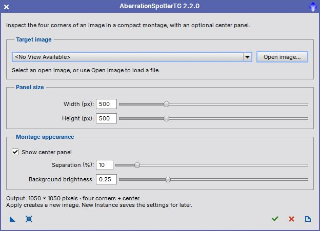

A script for inspecting the corners and the center of an image. User guide for version 2.2.0. [more]
Keywords: optical aberrations, corner inspection, image montage, TGScripts, David Serrano
[hide]
[hide]
AberrationSpotterTG creates a new image containing the four corners and, optionally, the center of a source image. It is based on the AberrationSpotter script by David Serrano and supports panels up to 2048×2048 pixels.
PixInsight 1.9.5 or later with the V8 JavaScript runtime is required. See the Parameter Reference for details of the controls.
[hide]
The version 2.2.0 dialog follows the compact native layout of recent TGScripts. Target image, Panel size, and Montage appearance group the controls. The output summary and action toolbar are at the bottom.

The screenshot shows the dialog opened with no image loaded. You can choose or open an image after launching the script, or save the panel settings as a process instance for later use.
[hide]
Open the installed script from Script > TG Scripts > AberrationSpotterTG. To use a repository copy, choose Script > Execute Script File and open src/scripts/TGScripts/AberrationSpotterTG.js from the TGScripts repository. You can launch it with an empty workspace.
The dialog stays open so that you can adjust settings or select another image and apply again. The selected source is retained even when the new montage becomes the active image. Panels must fit within the source image. Right and bottom corners include the final source column and row. Grayscale and RGB images retain their channel count and sample depth. The source image is not modified.
[hide]
From left to right, the toolbar contains:
New Instance (blue triangle)
Drag to save the five panel and appearance settings as a process icon. A target image is not required and is not stored in the instance. Drag the saved instance onto an image to create its montage directly. Opening the instance globally opens the dialog so that you can select a target.
Reset (blue reset icon)
Restore the default 500×500-pixel panels, center panel enabled, 10 percent separation, and 0.25 background brightness. The selected target is retained.
Apply (green check mark)
Create a new montage from the selected target. The dialog remains open for another application.
Close (red cross)
Close the dialog. Images already opened or created remain available in PixInsight.
Documentation (page icon)
Open this user guide.
[hide]
The dialog can be opened before any image is available. Select an open image in Target image, or click Open image to load an image file and select it automatically. The currently active image is selected initially when available. Set the panel options and click the Apply icon to create the corner montage from the selected image. If no target is selected, a warning returns you to the dialog instead of failing at startup. Use New Instance to save the panel options as a process icon without selecting an image. Drag the saved instance onto an image to process that image directly with the saved settings. Opening a saved instance globally displays the dialog so you can select or open an image first.
Width of each corner panel and the optional center panel, from 2 to 2048 pixels. The default is 500 pixels. It must not exceed the target image width.
Height of each corner panel and the optional center panel, from 2 to 2048 pixels. The default is 500 pixels. It must not exceed the target image height.
Gap between the corner panels, from 0 to 100 percent of the smaller panel dimension. The default is 10 percent. The result is rounded down to a whole number of pixels with a minimum gap of one pixel. This control is enabled only when the center panel is shown. Without the center panel the gap is one pixel.
Brightness of the gaps and center border, from 0 (black) to 1 (white). The default is 0.25. This changes the montage background, not the source image pixels.
[hide]
The output width is twice the panel width plus the gap. Its height is twice the panel height plus the same gap. The default settings create a 1050×1050-pixel image; disabling the center panel with the same panel sizes creates a 1001×1001-pixel image. If Apply reports that no target is selected, choose an image in Target image or use Open image. If a panel exceeds the source dimensions, reduce Width or Height. An image that cannot be opened produces a message and leaves the dialog available so you can choose another file.
Copyright © 2022 Dr. Thorsten Glebe